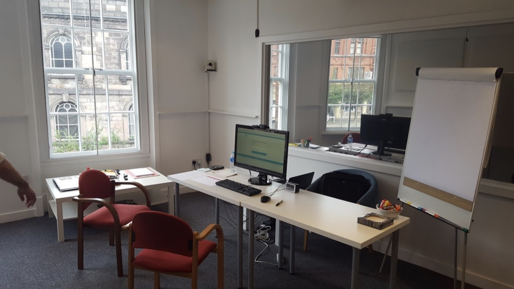
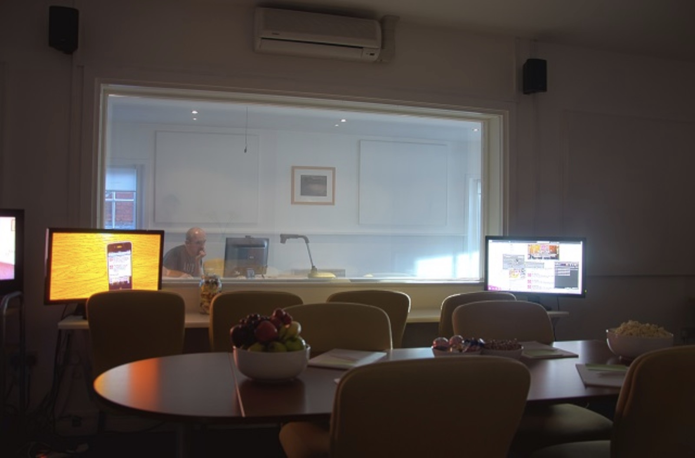
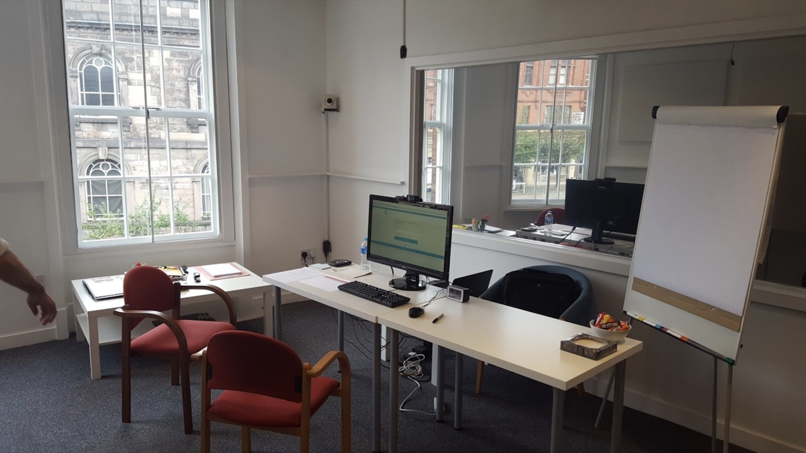
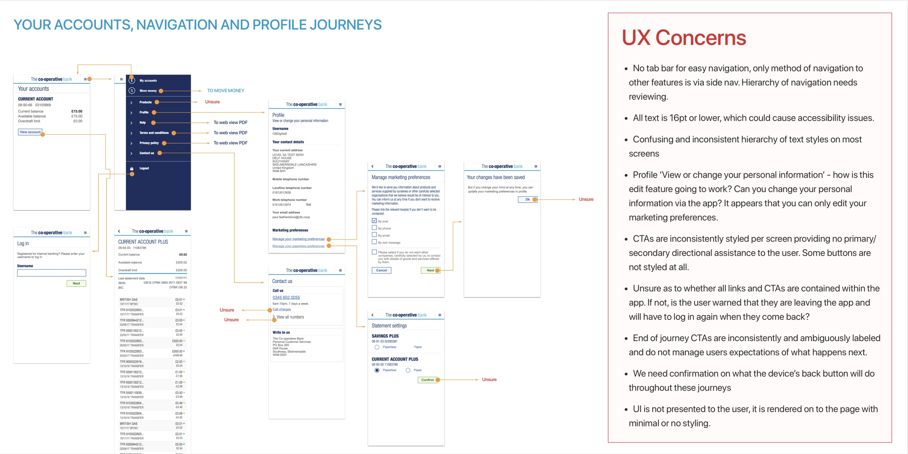
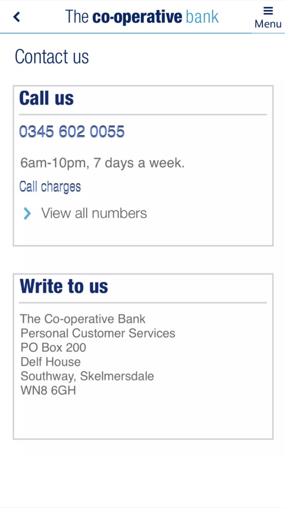
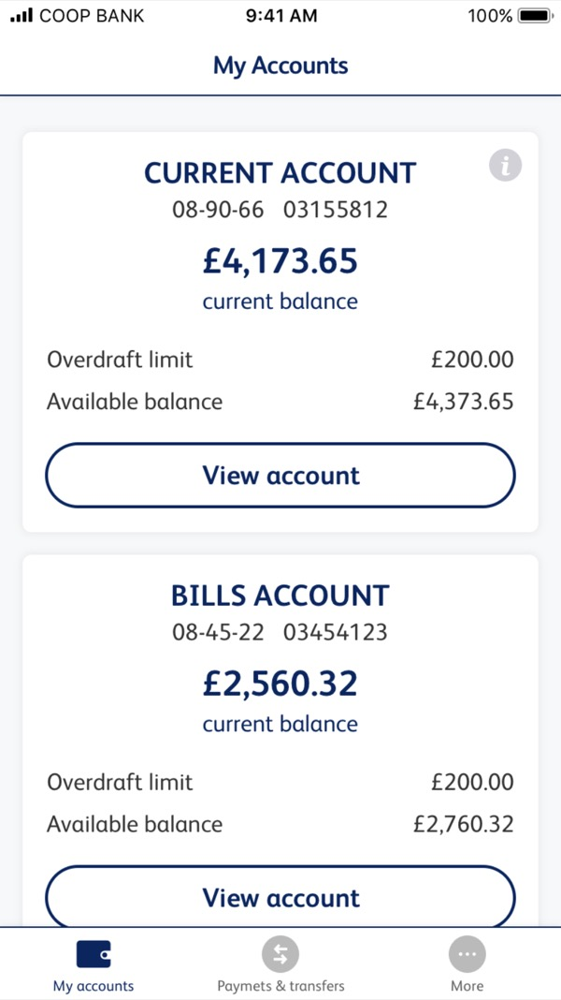
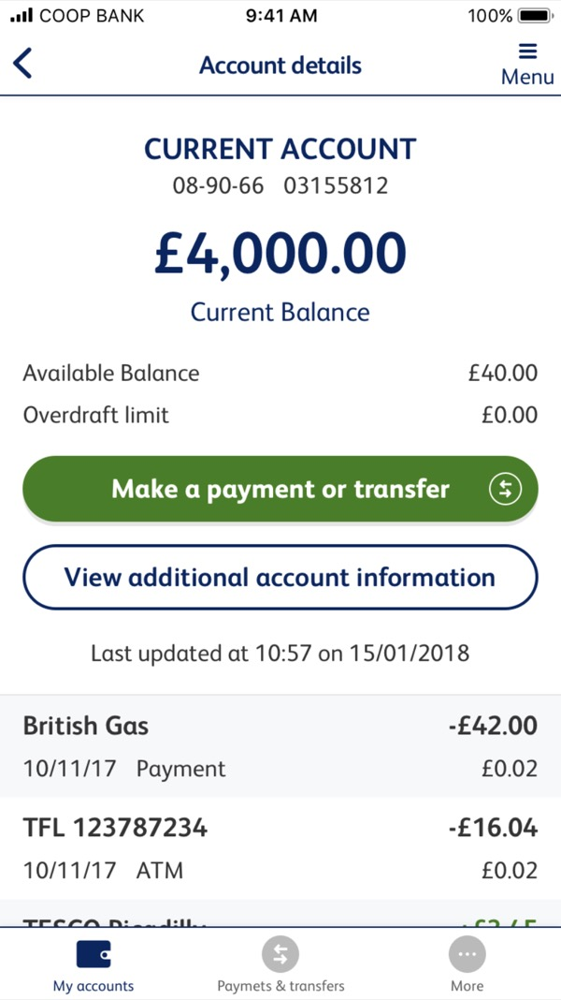
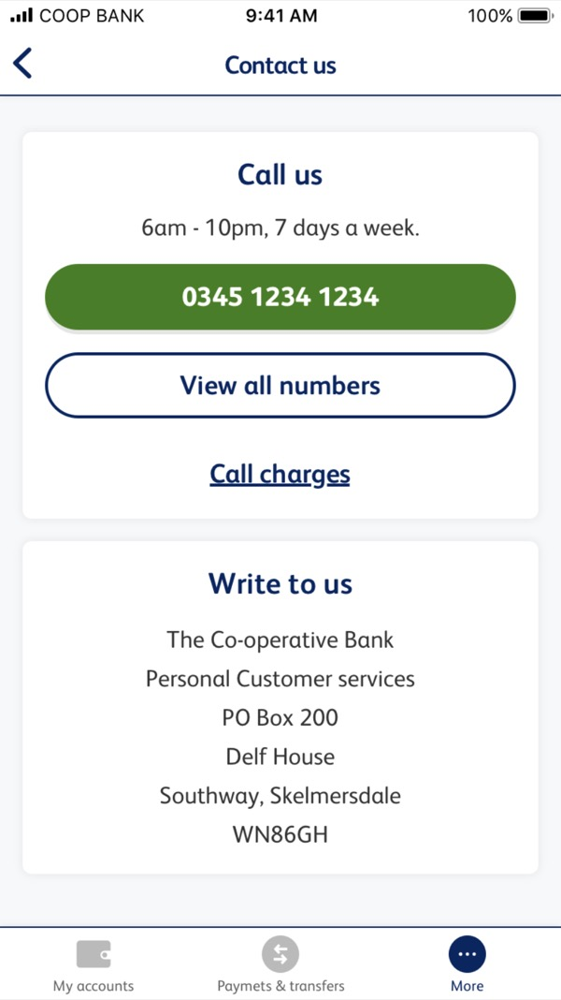
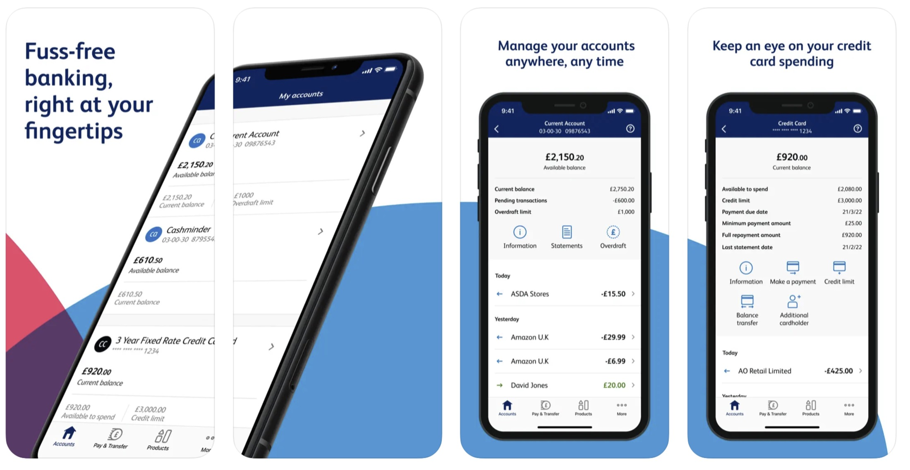
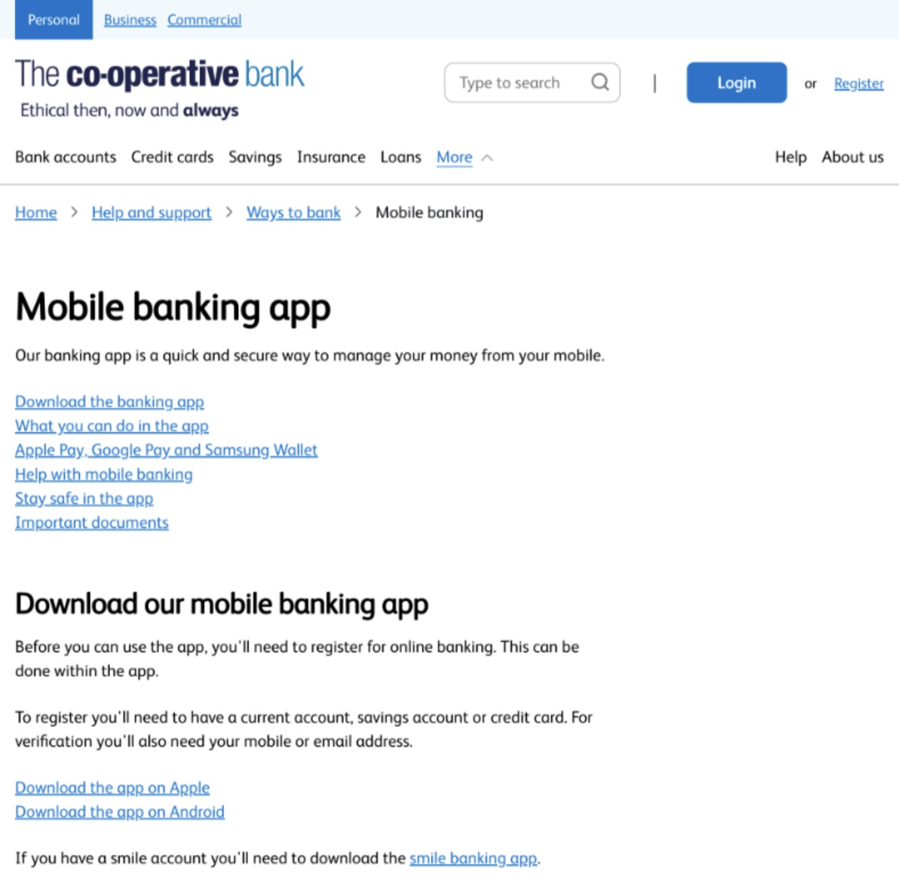

The Co-operative Bank
MVP re-launched with UX, app shipped on iOS & Android.
- Role
- UX Designer
- Dates
- 2017 to 2018

Introduction
I was hired at The Co-operative Bank to lead the design of a new mobile banking app MVP project.
My brief was to help enhance their mobile banking offering in order for the business to remain competitive and relevant following some struggles it had faced in recent years.
I led UX/UI design for the bank's new iOS and Android mobile banking app, and its website, working with marketing, brand, research and business-wide stakeholders.
Projects
- Mobile Banking native iOS and Android app
- Mobile Banking web product pages
- Mobile Banking marketing material and communications
- Corporate identity refresh
Responsibilities
- Lead mobile app UX/UI and research
- Ensure dev team, agency partners and internal design team alignment and collaboration
- Work closely with the product owner to refine the backlog and plan sprints
- Define and deliver the design system and components
- Initiate and support research activities
- Design solutions that meet requirements
- Design solutions to resolve identified customer pain points
- Present research findings and design solutions to senior leadership
The Problem
Shortly after starting in my role, I quickly realised that the MVP project was ploughing ahead at a significant pace and that the UX team had not yet been engaged.
Requirements had already been defined and development of the new app had started, using outdated and sub-optimal technology, without any design input.
From my knowledge and experience, my assessment was that the product being developed was heavily flawed, both in its functionality and usability, and wasn't a viable product to release to customers. The 'V' in MVP didn't stand up, which could have resulted in an exodus of customers and further challenges for the bank to tackle.
Discovery
My first course of action was to plan a series of UX activities in collaboration with the research team, gathering quantitative and qualitative data about the proposed MVP and the impact it would have on customers if it was to go live, as well as capturing insights regarding customer needs and priority of requirements for a mobile banking application.

Moderated Customer Interviews
Actual bank customers, invited to test the proposed product. Task driven observations followed by interviews about their experience.
Unmoderated Internal Testing
Colleagues from various departments invited to test the proposed product. Task driven observations, with data captured through a tool, followed by a survey.
Design Thinking Workshops
Multiple small groups of mixed participants from different departments, collaborating in small teams to create value proposition canvases.


Analyse and Align
I started to cluster insights and analyse the findings from the research, and also documented my own UX/UI analysis of the app as it stood.

I also proactively reached out to build strong relationships with the product owner and development lead for the project. I wanted to better understand the proposed requirements and technological constraints in detail, as well as ensure UX engagement in the project moving forwards.
Re-Launch Sign Off
With insights in hand, and a strong level of alignment and understanding between the UX team, product owner and the development team, we had several discussions on how we might proceed differently with the project.
We then collectively presented to senior leadership a proposal for a project re-launch, using the data captured to validate our reasoning. We presented the problem space and where we were, the data to support and rationalise the need for a re-launch, and an aligned solution and new approach to the project for their feedback. Problem and solution, hand in hand, so all leadership needed to do was approve.
Design Sprint, 2 Weeks
- Discover (research and workshops)
- Design (ideation, concepts, wireframes, prototypes)
- Validate (user testing)
- Deliver (final UI and dev handover)
- End of sprint demo to senior leadership
- Backlog refinement and next sprint planning
Development Sprint, 2 Weeks
- Build
- Peer review
- Deliver to UX
- UAT test, feedback and sign off
- End of sprint demo to senior leadership
- Backlog refinement and next sprint planning
The team: UX lead, product owner, dev lead, researcher, business analysts and developers, reporting to senior leadership. Each design sprint fed the development sprint that followed, with the next design sprint running alongside it.
Delivery
The bank's senior leadership approved the project re-launch, with a strong emphasis on the need to move quickly. I collaborated further with the project team to put our product team and new way of working into action, and began working on design solutions within design sprints.
Two-week design sprints began within one week. They included ideation and discovery activities with project team members and key stakeholders, rapid design and prototyping, and validation testing with real customers. Design sprints fed two-week development sprints, so a robust pipeline of delivery was in place.
Design, development and product stayed closely aligned and communication was strong. The whole product team took over an entire floor of the office and worked shoulder to shoulder, and everyone took part in each other's stand ups, workshops and planning sessions.
My focus was not only on building the product, but also on launching it and migrating and onboarding users. Close to launch, I brought the web and marketing team into our project team, sprints and process, so an onboarding and migration plan was in place for existing online banking customers to download the new app and set it up with minimal disruption to their financial management, and so that everything new or existing customers needed to start using the app was available online.
Before and After





